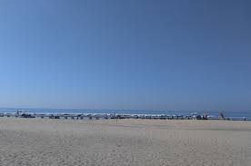
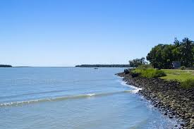

Beaches

Laboni & Sugandha
Central, lively, easy access. Good for quick sunsets and beach snacks; expect crowds.

Kolatoli
Close to hotels and eateries. Beach activities, ATVs, and family-friendly walks.

Inani Beach
Rocky corals and clearer water south of town. Quieter, scenic, great for photos.

Himchari area
Cliffs and viewpoints near the national park. Best for dramatic landscapes and sunrise drives.

Marine Drive
Long coastal road—stop at hidden coves for calmer sands away from the central bustle.

Teknaf coast
Far south, raw coastline with fewer amenities. Rewarding for explorers seeking solitude.